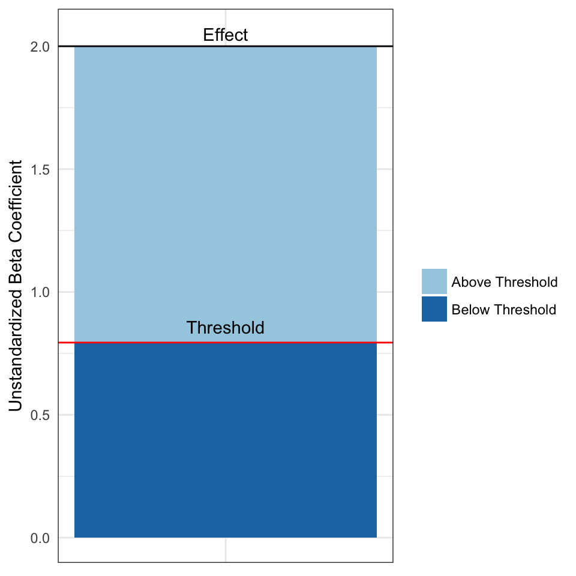
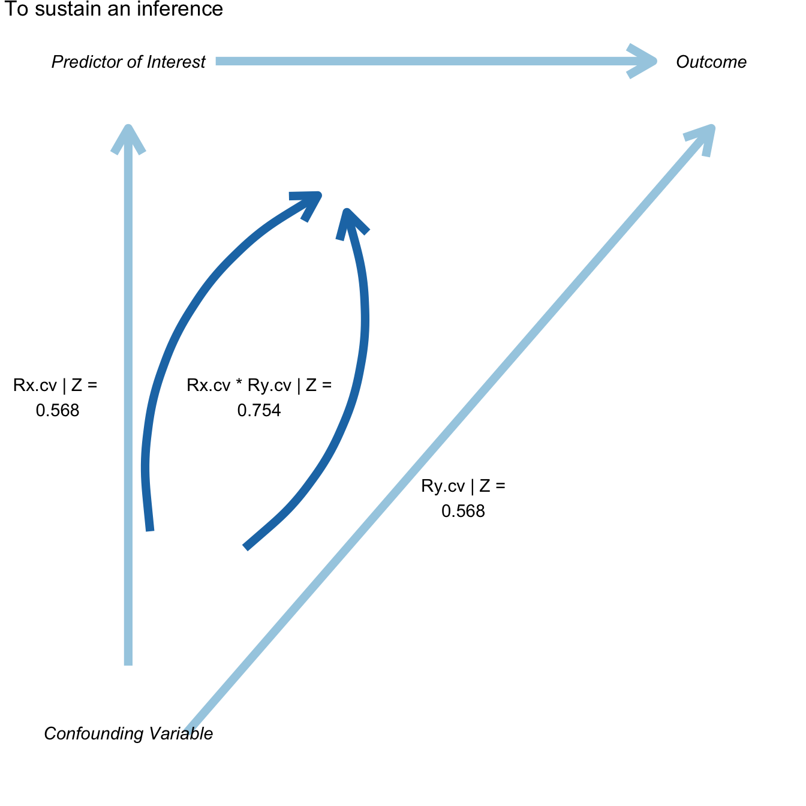

Introduction to konfound
Joshua Rosenberg, Ran Xu, and Ken Frank
2017-11-05
Abstract
This abstract is adapted from Xu, Frank, and Maroulis’ STATA tutorial “What would it take to Change your Inference? Quantifying the Discourse about Causal Inferences in the Social Sciences”
Statistical methods that quantify the discourse about causal inferences in terms of possible sources of biases, or “sensitivity analysis,” is becoming more important to a variety of social science fields, including research in education, public policy, and political science. A series of recent works by Frank and colleagues on sensitivity analysis points to limitations in earlier methods and aims to extend beyond them. We implement these developments, which previously have been implemented in Stata, in R through the konfound package. In particular, we provide functions for quantifying the bias necessary to alter an inference, from the framework of Rubin’s (1974) causal model, as well as the robustness of causal inference in terms of correlations associated with unobserved variables.
Examples
konfound is an R package to easily carry out sensitivity analysis as described in Frank, Maroulis, Duong, and Kelcey (2013) based on Rubin’s (1974) causal model.
Loading konfound
library(konfound)## Loading konfound## Sensitivity analysis as described in Frank, Maroulis, Duong, and Kelcey (2013).
## For more information visit https://jmichaelrosenberg.shinyapps.io/shinykonfound/.Use of pkonfound()
pkonfound(2, .4, 100, 3)## Replacement of Cases Approach:
## To invalidate the inference, 60.3 % of the estimate would have to be due to bias.
## To invalidate the inference, 60 observations would have to be replaced with cases for which the effect is 0.
##
## Correlation-based Approach:
## An omitted variable would have to be correlated at 0.568 with the outcome and at 0.568 with the predictor of interest (conditioning on observed covariates) to invalidate an inference.
## Correspondingly the impact of an omitted variable (as defined in Frank 2000) must be 0.568 X 0.568 = 0.754 to sustain an inference.pkonfound(2, .4, 100, 3, to_return = "thresh_plot")
pkonfound(2, .4, 100, 3, to_return = "corr_plot")
pkonfound(.4, 2, 100, 3)## Replacement of Cases Approach:
## To sustain the inference, 89.924 % of the estimate would have to be due to bias.To sustain the inference, 90 of the cases with 0
## effect would have to be replaced with cases at the threshold of inference.
##
## Correlation-based Approach:
## An omitted variable would have to be correlated at 0.387 with the outcome and at 0.387 with the predictor of interest (conditioning on observed covariates) to sustain an inference.
## Correspondingly the impact of an omitted variable (as defined in Frank 2000) must be 0.387 X 0.387 = 0.622 to invalidate an inference.pkonfound(.4, 2, 100, 3, to_return = "thresh_plot")
pkonfound(1.2, 2, 100, 3, to_return = "corr_plot")
Use of konfound()
For linear models fit with lm()
m1 <- lm(mpg ~ wt + hp + qsec, data = mtcars)
m1##
## Call:
## lm(formula = mpg ~ wt + hp + qsec, data = mtcars)
##
## Coefficients:
## (Intercept) wt hp qsec
## 27.61053 -4.35880 -0.01782 0.51083konfound(m1, hp)## Replacement of Cases Approach:
## To sustain the inference, 41.327 % of the estimate would have to be due to bias.To sustain the inference, 13 of the cases with 0
## effect would have to be replaced with cases at the threshold of inference.
##
## Correlation-based Approach:
## An omitted variable would have to be correlated at 0.322 with the outcome and at 0.322 with the predictor of interest (conditioning on observed covariates) to sustain an inference.
## Correspondingly the impact of an omitted variable (as defined in Frank 2000) must be 0.322 X 0.322 = 0.567 to invalidate an inference.konfound(m1, test_all = T)## var_name unstd_beta std_err n_obs n_covariates inference
## 1 wt -4.359 0.753 32 2 to_invalidate
## 2 hp -0.018 0.015 32 2 to_sustain
## 3 qsec 0.511 0.439 32 2 to_sustain
## percent_bias replace_null_cases beta_threshhold omitted_variable_corr
## 1 64.669 21 -1.54005792 0.772
## 2 41.327 13 -0.03067844 0.322
## 3 43.087 14 0.89785581 0.329You can also return a table with some key output from the correlation-based approach.
konfound(m1, wt, to_return = "table")## Dependent variable is mpg## term estimate std.error statistic p.value itcv impact
## 1 (Intercept) 27.611 8.420 3.279 0.003 NA NA
## 2 wt -4.359 0.753 -5.791 0.000 0.243 NA
## 3 hp -0.018 0.015 -1.190 0.244 NA 0.511
## 4 qsec 0.511 0.439 1.163 0.255 NA 0.073For generalized linear models fit with glm()
Effects for these models are interpreted on the basis of average partial (or marginal) effects (calculated using the margins package).
# if forcats is not installed, this install it first using install.packages("forcats") for this to run
if (requireNamespace("forcats")) {
d <- forcats::gss_cat
d$married <- ifelse(d$marital == "Married", 1, 0)
m2 <- glm(married ~ age, data = d, family = binomial(link = "logit"))
konfound(m2, age)
}## Warning in konfound(m2, age): For a non-linear mode, impact threshold
## should not be used.## Replacement of Cases Approach:
## To sustain the inference, 80.978 % of the estimate would have to be due to bias.To sustain the inference, 17334 of the cases with 0
## effect would have to be replaced with cases at the threshold of inference.
##
## Correlation-based Approach:
## An omitted variable would have to be correlated at 5.535 with the outcome and at 5.535 with the predictor of interest (conditioning on observed covariates) to invalidate an inference.
## Correspondingly the impact of an omitted variable (as defined in Frank 2000) must be 5.535 X 5.535 = 2.353 to sustain an inference.Use of mkonfound()
Here, df represents output from a number of past studies.
df <- data.frame(unstd_beta = c(2, 10, 1.7, .4, 3.2, 1.0, 2.3, 4.1, .9),
std_error = c(.3, 2.9, 1.5, 2, .1, .04, .1, 3, .5),
n_obs = c(70, 405, 200, 100, 103, 20, 50, 721, 320),
n_covs = c(3, 4, 1, 3, 10, 4, 1, 1, 0))
mkonfound(df)## unstd_beta std_error n_obs n_covs inference percent_bias
## 1 2.0 0.30 70 3 to_invalidate 70.052
## 2 10.0 2.90 405 4 to_invalidate 42.989
## 3 1.7 1.50 200 1 to_sustain 42.529
## 4 0.4 2.00 100 3 to_sustain 89.924
## 5 3.2 0.10 103 10 to_invalidate 93.793
## 6 1.0 0.04 20 4 to_invalidate 91.474
## 7 2.3 0.10 50 1 to_invalidate 91.258
## 8 4.1 3.00 721 1 to_sustain 30.388
## 9 0.9 0.50 320 0 to_sustain 8.510
## replace_null_cases beta_threshhold omitted_variable_corr
## 1 49 0.59896933 0.725
## 2 174 5.70114580 0.283
## 3 85 2.95802622 0.227
## 4 90 3.96996862 0.387
## 5 97 0.19860863 0.974
## 6 18 0.08525798 0.990
## 7 46 0.20106348 0.971
## 8 219 5.88980656 0.144
## 9 27 0.98371419 0.091mkonfound(df, return_plot = TRUE)## `stat_bin()` using `bins = 30`. Pick better value with `binwidth`.
References
Frank, K.A., Maroulis, S., Duong, M., and Kelcey, B. 2013. What would it take to Change an Inference?: Using Rubin’s Causal Model to Interpret the Robustness of Causal Inferences. Education, Evaluation and Policy Analysis. Vol 35: 437-460. https://msu.edu/~kenfrank/What%20would%20it%20take%20to%20Change%20an%20Inference%20published.docx
Frank, K.A., Gary Sykes, Dorothea Anagnostopoulos, Marisa Cannata, Linda Chard, Ann Krause, Raven McCrory. 2008. Extended Influence: National Board Certified Teachers as Help Providers. Education, Evaluation, and Policy Analysis. Vol 30(1): 3-30. https://msu.edu/~kenfrank/papers/Does%20NBPTS%20Certification%20Affect%20the%20Number%20of%20Colleagues%20a%20Teacher%20Helps%20with%20Instructional%20Matters%20acceptance%20version%202.doc
Frank, K. A. and Min, K. 2007. Indices of Robustness for Sample Representation. Sociological Methodology. Vol 37, 349-392. https://msu.edu/~kenfrank/papers/INDICES%20OF%20ROBUSTNESS%20TO%20CONCERNS%20REGARDING%20THE%20REPRESENTATIVENESS%20OF%20A%20SAMPLE.doc (co first authors)
Frank, K. 2000. “Impact of a Confounding Variable on the Inference of a Regression Coefficient.” Sociological Methods and Research, 29(2), 147-194 https://msu.edu/~kenfrank/papers/impact%20of%20a%20confounding%20variable.pdf